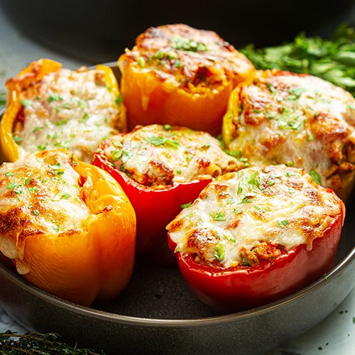
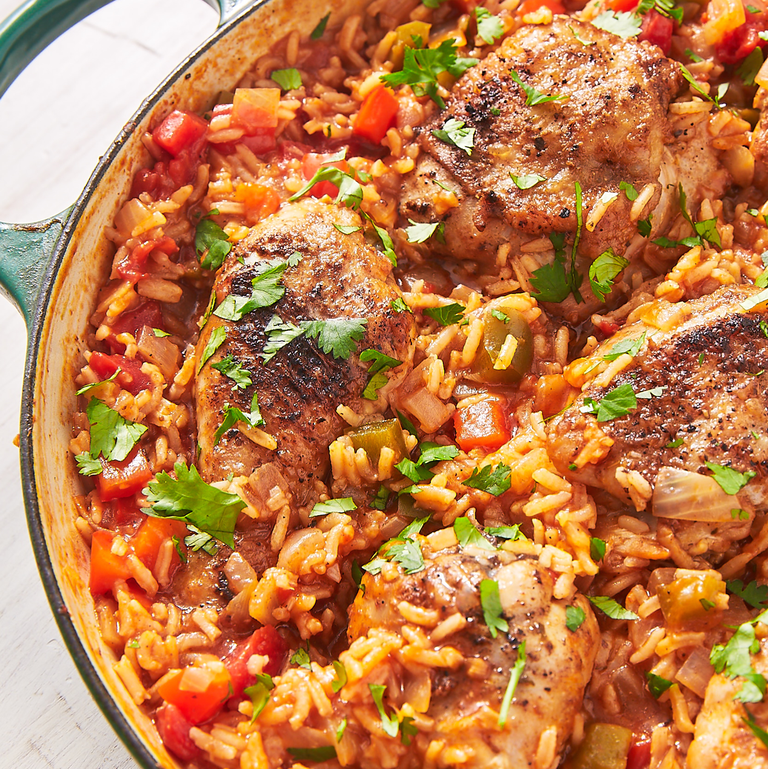

Classic stuffed peppers
The bell pepper is an excellent vessel for stuffing meat, rice, and, of course, cheese. It's strong enough to hold its shape in the oven, and the flavor is subtle enough to go well with just about anything. This is our favorite recipe, but the customization options are endless.

- large bell peppers
- 2 tbsp olive oil
- 1/4 cup yellow onion (finely chopped)
- 2 tbsp garlic (minced)
- 1 1/4 lbs lean ground turkey
Arroz Con Pollo
Want something awesome for dinner but don't want to spend your entire evening cooking and cleaning? Arroz con pollo (chicken with rice in Spanish) is the the perfect recipe. It's an easy one-pot meal that doesn't taste like one, and it tastes even better as leftovers.

- 3 lb. bone-in, skin-on chicken thighs and drumsticks
- Kosher salt
- Freshly ground black pepper
- 2 tsp. ground cumin
- 1 tsp. dried oregano
- 1 tsp. garlic powder
- 1/2 tsp. cayenne pepper
- 3 tbsp. extra-virgin olive oil
- 1 large onion, chopped
- 2 bell peppers, chopped
- 4 cloves garlic, minced
- 2 tbsp. tomato paste
- 1 c. long-grain rice
- 2 c. low-sodium chicken broth
- 1 (14-oz.) can diced tomatoes
- 1 bay leaf
- Freshly chopped cilantro, for garnish